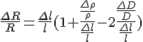
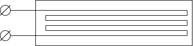
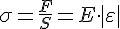

ИП на основе тензорезистивного эффекта
Тензометрические измерительные преобразователи(тензорезисторы) предназначены для преобразования упругих деформаций, механических напряжений, давления, крутящего момента, усилия, ускорения, параметров вибраций и т.д. в изменение электрического сопротивления под воздействием статических и динамических нагрузок.
Принцип действия тензодатчиков основан на использовании тензоэффекта, проявляющегося в изменении электрического сопротивления материала (проводника/полупроводника) при деформации этого материала под действием внешней механической нагрузки.
Чувствительный элемент может быть выполнен из тонкой проволоки, фольги, полупроводниковой пленки или пластинки монокристалла.
Под дейстивем внешней силы(растяжения/сжатия) электрическое сопротивление материала проволоки меняется, при чем это происходит не только вследствие изменения его геометрических параметров, но и вследствие изменения структуры материала.
Возьмем полный дифферинциал ф-ции 3-х аргументов
где

- коэф. эластосопротивления
- коэф. Пуассона
- коэф. тензопреобразования
- относительное удлиннение
Для фольговых
Общая ф-ция тензопреобразователя
Используемые материалы:
|
Материал |
Коэффициент тензочувствительности |
Температурный диапазон |
Критическая температура |
|
Константан |
2 |
-270:+260 |
315 |
|
Манганин(сплав на основе меди) |
2 |
-270:+180 |
180 |
|
Нихром |
2 |
-270:+400 |
450 |
|
Платина-вольфрам |
2.7-3.3 |
-270:+550 |
- |

Обычно тензопреобразователи изготавливают их проволоки диаметром от 15 до 25 мкм или фольги от 3 о 5 мкм, закрепленной на специальной герметичной форме и уложенной зигзагом
Тензометрические преобразователи наклеиваются на поверхность детали так, чтобы чувствительная решетка была направлена вдоль ожидаемой деформации. Деформация поверхности приводит к деформации проволоки тензорезистора и изменению его эл. сопротивления.
Измерение силы и массы
Для измерения приложенной силы или массы различных объектов применяются специальные упругие элементы различной геометрической формы основной задачей которых является изменение своих размеров под действием нагрузки и восстановление первичной формы после снятия нагрузки.
Одной из главных ф-ций упругих элементов является преобразование нагрузки в механическое перемещение.
Для измерения силы и массы наибольшее распространение получили стержневые упругие элементы. Под воздействием внешней силы деформацию сжатия и растяжения стержня постоянного сечения можно характеризовать абсолютным удлиннением равным разности длин образца до и после растяжения (сжатия)
Относительное удлиннение стержня можно найти из ф-лы
Абсолютное удлиннение при растяжении имеет положительное значение, при сжатии - отрицательное.
Отношение  к - относительное удлиннение
к - относительное удлиннение
При деформации стержня возникает сила упругости, равная 
- модуль Юнга, коэф. пропорциональности в з-не Гука
Деформация, действующая вдоль приложенной силы - продольная деформация,
Деформация, действующая поперек приложенной силы - поперечная деформация,